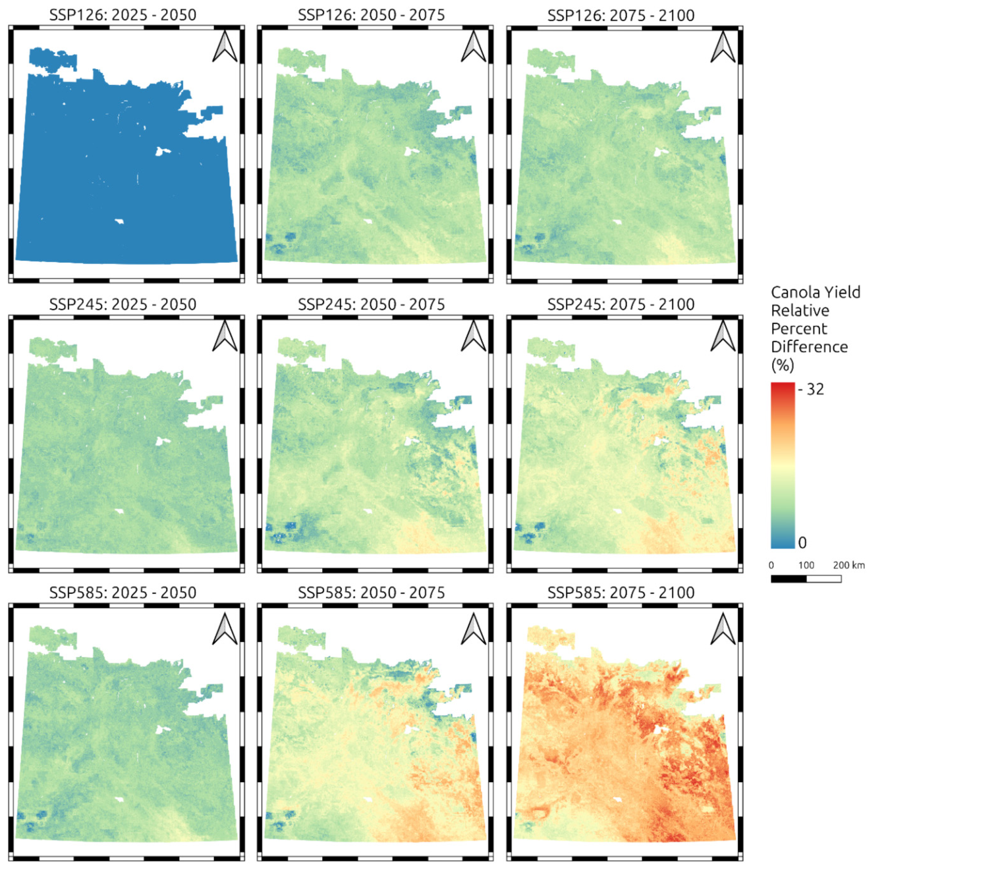

Canola Yields in a Warming Climate: A Scenario Map for Saskatchewan
Canola is Saskatchewan’s largest crop and one of the most valuable in the country. Roughly 22 million seeded acres in 2024 and a $43.7 billion footprint in the Canadian economy. It also has a well-known weakness to heat. Canola flowers are sensitive to hot days, and yields fall off sharply when temperatures spike during the critical July flowering window. That makes it a natural test case for a question every climate-exposed agribusiness eventually has to ask. Not just will the climate change, but what does it do to the thing I care about, how much, and where?
I built a model to answer that for canola across the whole province, out to the end of the century.
Building a forward-looking yield model
The approach pairs two things I work with often: climate projections and predictive soil maps. I trained a machine-learning model (a random forest) on two decades of crop-insurance yield records, using both soil properties (organic carbon, clay, and sand from earlier mapping work) and the climate variables canola responds to: July maximum and minimum temperature, the number of days above 30°C, the number of nights above 16°C, and annual precipitation.
Then I ran that model forward using 26 downscaled global climate models, across three emissions pathways: low (SSP1-2.6), moderate (SSP2-4.5), and high (SSP5-8.5). For every quarter section in the province, from 2025 to 2100. Using 26 models rather than one is the point: the spread between them is the uncertainty, and averaging across them gives a more honest central estimate than any single model could. The model validated reasonably against held-out data (R-squared of 0.51, RMSE of 429 kg/ha), in line with other Canadian canola yield models.
Temperature is the lever
The clearest signal was that canola yields track temperature more than precipitation. Modelled yields rose with temperature up to a point and then decreased once mean daily July maximum temperatures passed about 28.5°C. That threshold matters because it is exactly the range future summers push into and it means the yield response to warming is not gentle and linear but flips from modest to damaging once the heat crosses that line.
How bad, and where
This is the figure that pulls it together: the relative change in canola yield across all three scenarios (rows) and three future periods (columns), all measured against the near-term low-emissions baseline.

Read it top-left to bottom-right and the risk gradient is unmistakable. Under the low-emissions pathway (top row), yields stay close to baseline through 2100. Under the high-emissions pathway (bottom row), the map turns progressively red, with the most severe losses concentrated in the late-century, high-emissions corner.
The province-wide median declines in Canola yield, long term, came out to:
- Low emissions (SSP1-2.6): about -39 kg/ha (2%) - essentially stable
- Moderate emissions (SSP2-4.5): about -137 kg/ha (6%)
- High emissions (SSP5-8.5): about -349 kg/ha (15%)
Two findings matter as much as the headline averages. First, the losses are not spread evenly. The largest declines fall in the Black soil zone. Today’s most productive canola producing region because those higher-yielding regions currently see little heat stress and have the most to lose as summers warm. Second, the losses arrive sooner than end-of-century. Under the moderate and high pathways, meaningful declines show up by the medium term (2050-2075), not just at 2100.
I’d flag one honest caveat: because of how the model and the insurance-claim yield data behave at the extremes, these are likely conservative estimates. Real losses in the hottest areas could run higher than shown.
Why this kind of analysis matters
For anyone assessing physical climate risk, lenders, insurers, agribusiness, or producers planning decades ahead, the useful output is not a single number but a spatial, scenario-dependent picture: how exposure changes by location, by emissions pathway, and over time. That is what lets you separate a manageable risk from a structural one, and target adaptations, such as heat-tolerant varieties and earlier seeding to move flowering ahead of peak July heat, where it will matter most.
It also shows what pairing climate ensembles with predictive soil mapping can do: turn broad warming projections into decision-grade, field-scale risk maps for a specific crop and a specific place.
This article summarizes: Sorenson, P. T., Mood, B., & Shirtliffe, S. (2025). Future canola yields under different climate scenarios in Saskatchewan, Canada. FACETS. https://doi.org/10.1139/facets-2025-0121